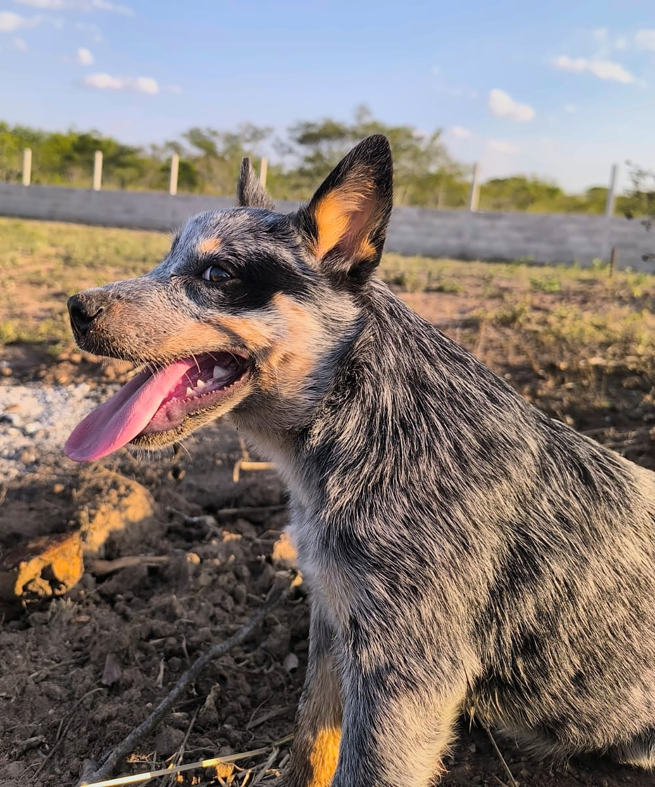
Sirius
Cheio de energia e personalidade, Sirius adora correr, brincar e participar de tudo o que acontece ao seu redor. É um cão atento e muito ligado à família.
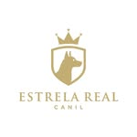
Somos o Canil Estrela Real, dedicado à criação de Boiadeiros Australianos (Blue Heelers), uma raça que conquista pela inteligência, energia, lealdade e personalidade única.
Nossa criação é movida pelo respeito à raça e pelo carinho que temos por cada cão. Aqui, cada filhote recebe atenção individual, cuidados diários e um ambiente preparado para seu desenvolvimento.
Mais do que criar cães, queremos ajudar a construir vínculos que durarão por toda a vida.
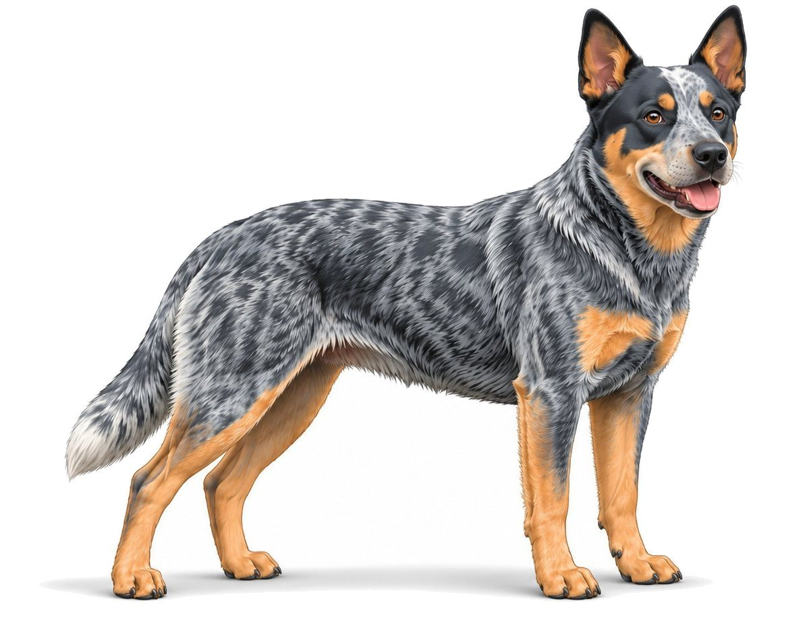
Conheça a raça
Originário da Austrália, o Boiadeiro Australiano foi desenvolvido para conduzir rebanhos em longas jornadas de trabalho, enfrentando condições exigentes e demonstrando resistência, inteligência e determinação.
Essas características continuam presentes na raça até hoje. O Blue Heeler é um cão extremamente inteligente, atento, ativo e leal à sua família.
Sua personalidade marcante faz dele muito mais do que um cão de companhia: é um verdadeiro parceiro para quem gosta de atividades, desafios e momentos ao ar livre.
Uma das características mais curiosas da raça é que os filhotes nascem com a pelagem predominantemente branca, que vai adquirindo suas características cores azuladas ou avermelhadas conforme crescem.
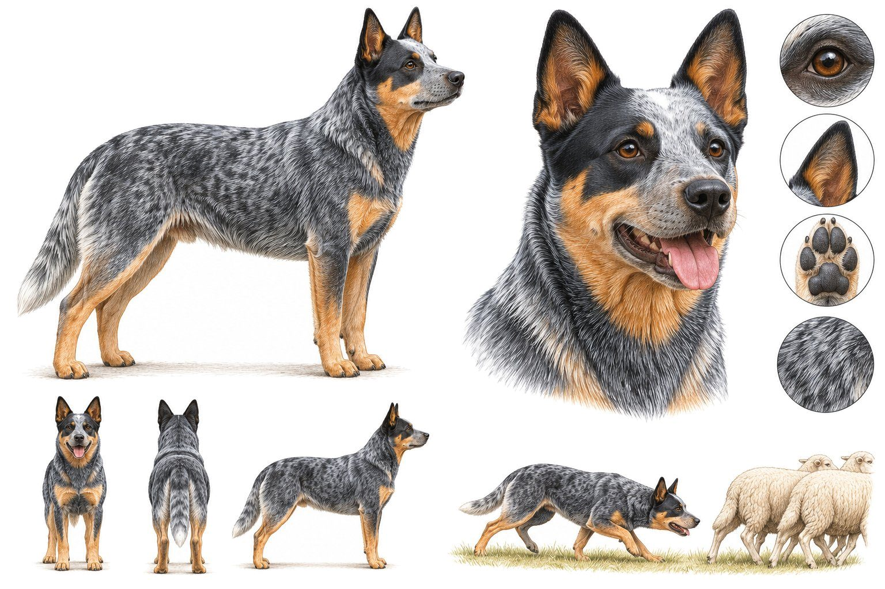
É uma excelente escolha para pessoas que gostam de uma rotina ativa, têm disposição para educar e estimular o cão e desejam um companheiro participativo no dia a dia.
É importante lembrar que sua inteligência e energia exigem dedicação, socialização e educação desde cedo.
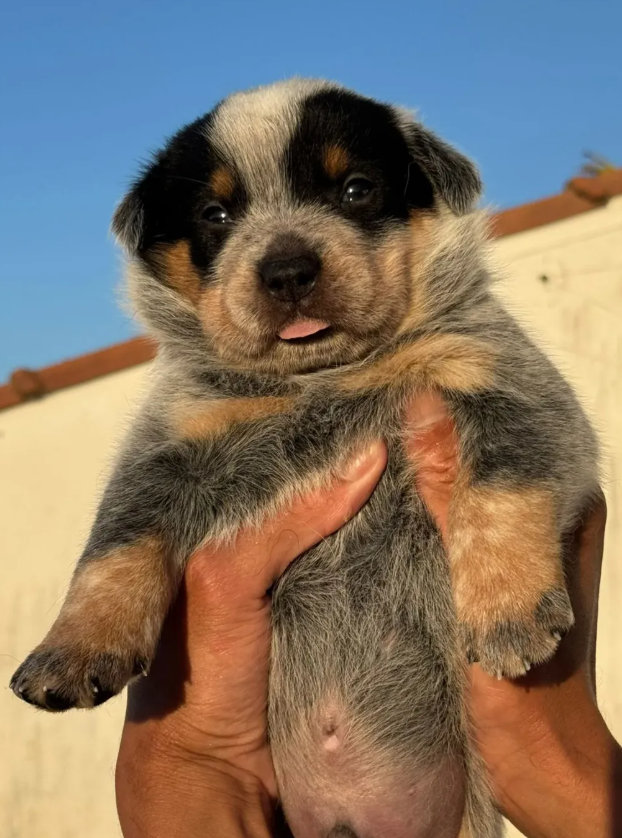
Nosso reprodutor
O Nuno representa um marco importante na história do Canil Estrela Real: nosso primeiro reprodutor de linhagem pura, da criação Serro Frio Heelers.
Sua chegada representa um passo importante no desenvolvimento do nosso trabalho com o Boiadeiro Australiano.
Buscamos construir uma criação pautada pelo respeito às características da raça, pela seleção criteriosa dos cães e pela atenção ao temperamento, à estrutura e à saúde.
Mais do que fazer parte da nossa criação, Nuno é parte da família Estrela Real e da história que estamos construindo.
Nossos cães
Por trás de cada ninhada existe uma família. São nossos cães que dão vida ao Canil Estrela Real e representam diariamente o carinho e a dedicação que temos pela raça.
Cada um tem sua personalidade, suas particularidades e seu jeito próprio de conquistar quem convive com ele.
Aqui, eles não são apenas reprodutores. São parte da nossa rotina, da nossa história e, acima de tudo, da nossa família.

Cheio de energia e personalidade, Sirius adora correr, brincar e participar de tudo o que acontece ao seu redor. É um cão atento e muito ligado à família.
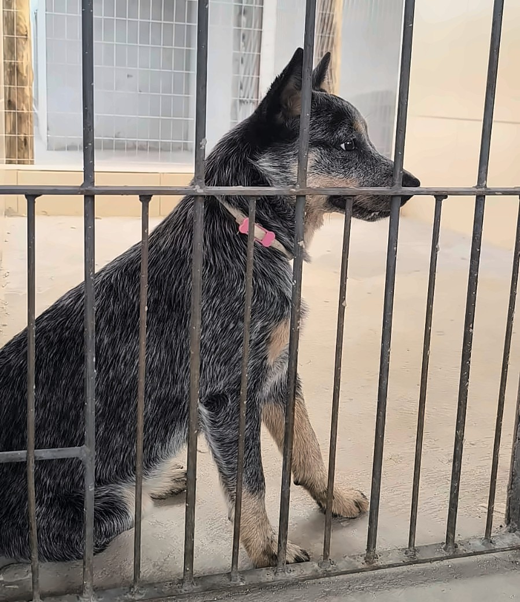
Observadora e carinhosa, Lyra tem seu próprio jeito de demonstrar afeto. Gosta de companhia, tranquilidade e de estar pertinho de quem confia.
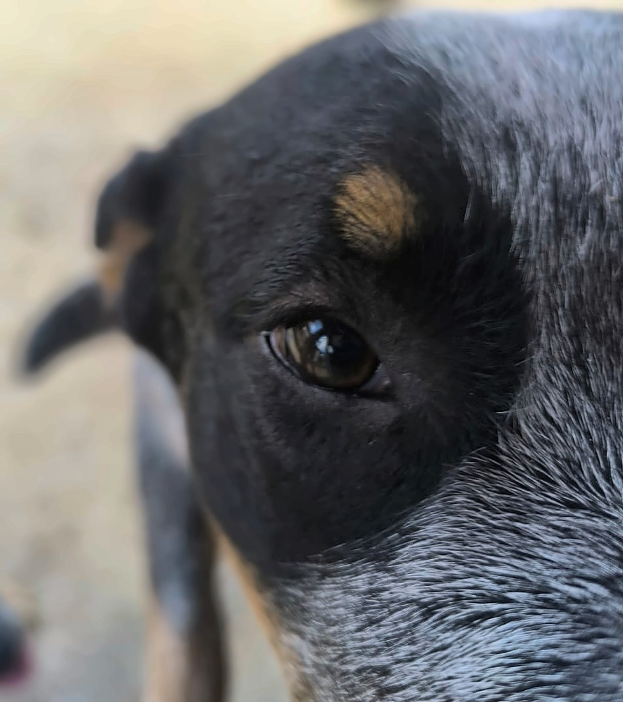
Nosso representante da linhagem Serro Frio Heelers. Inteligente, atento e com características que valorizamos na raça, Nuno integra nosso programa de criação.
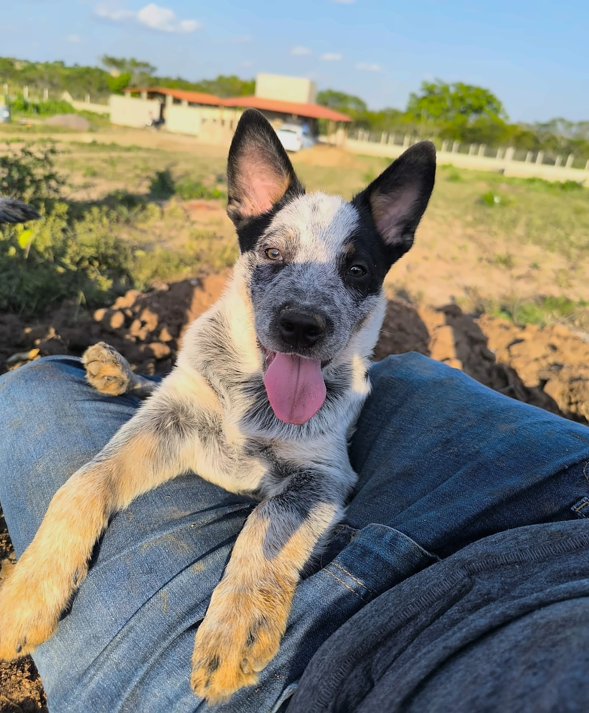
Alegre, sociável e cheia de disposição, Zara conquista facilmente as pessoas. Adora brincar, explorar e aproveitar os momentos ao lado da família.
Nossa estrutura
Acreditamos que uma boa criação começa muito antes do nascimento dos filhotes. O ambiente em que os cães vivem e se desenvolvem faz parte desse cuidado.
Nossa estrutura oferece espaços para atividades, descanso, brincadeiras e convivência, permitindo que os cães explorem, se movimentem e tenham contato com diferentes estímulos do cotidiano.
Os filhotes crescem em um ambiente acompanhado de perto, com atenção à higiene, ao conforto, à socialização e ao desenvolvimento individual.
Cada fase é importante para que estejam preparados para iniciar uma nova história ao lado de suas futuras famílias.
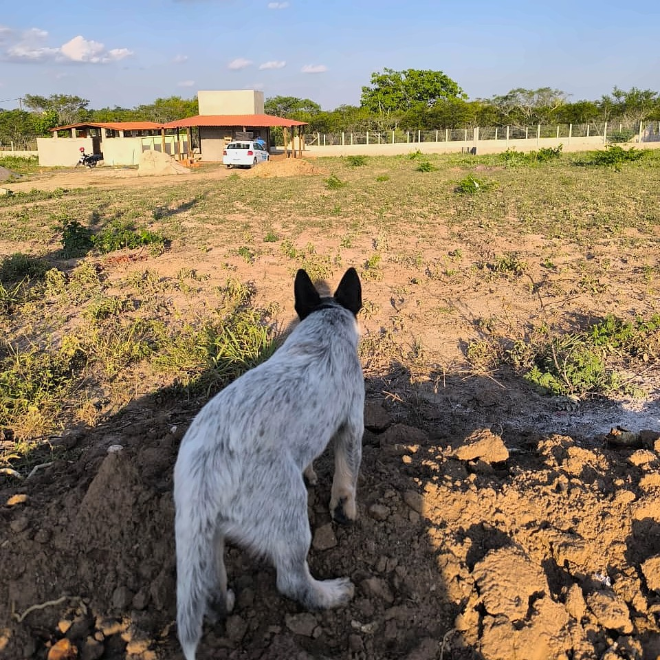
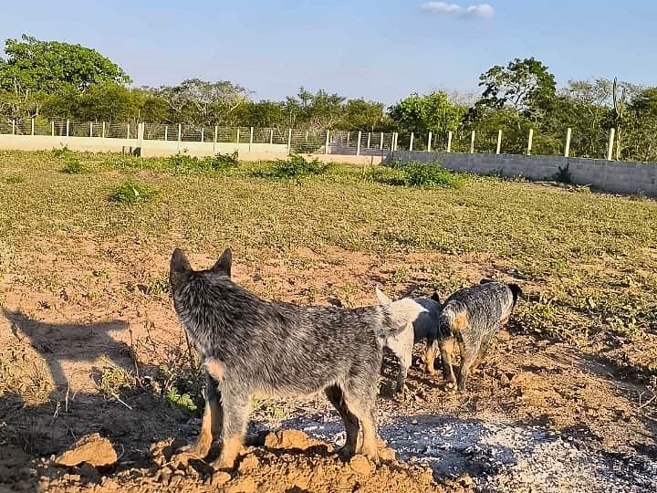
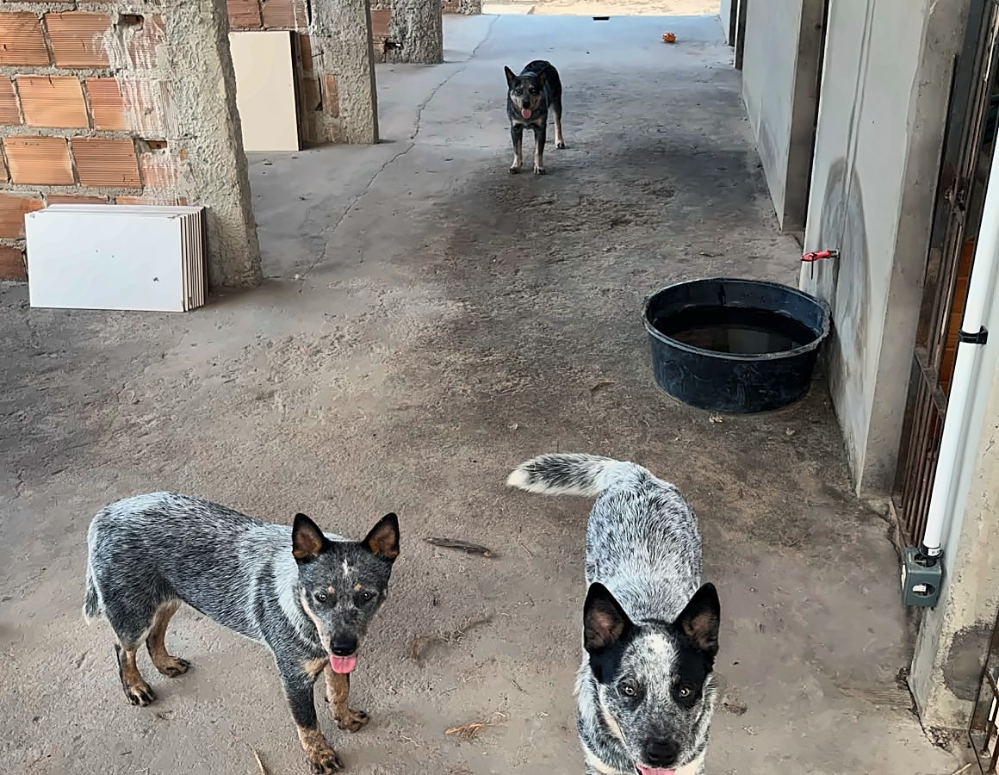
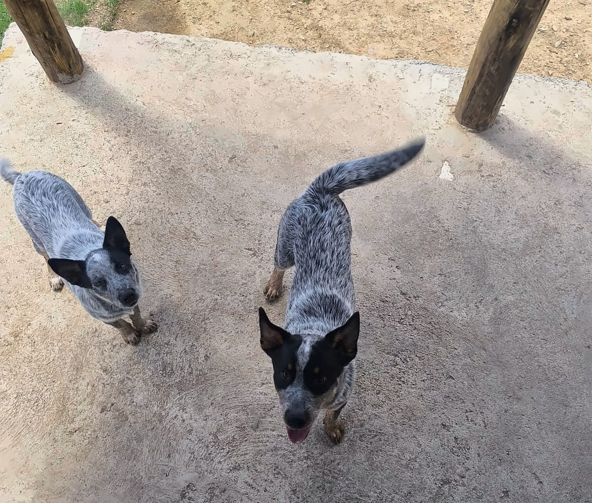
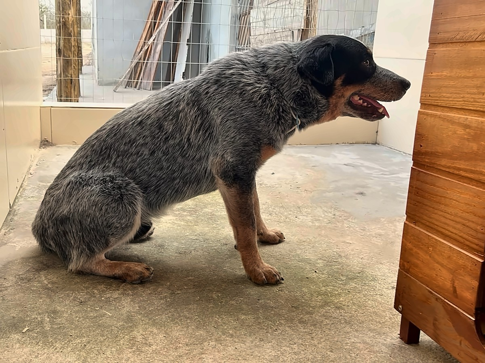
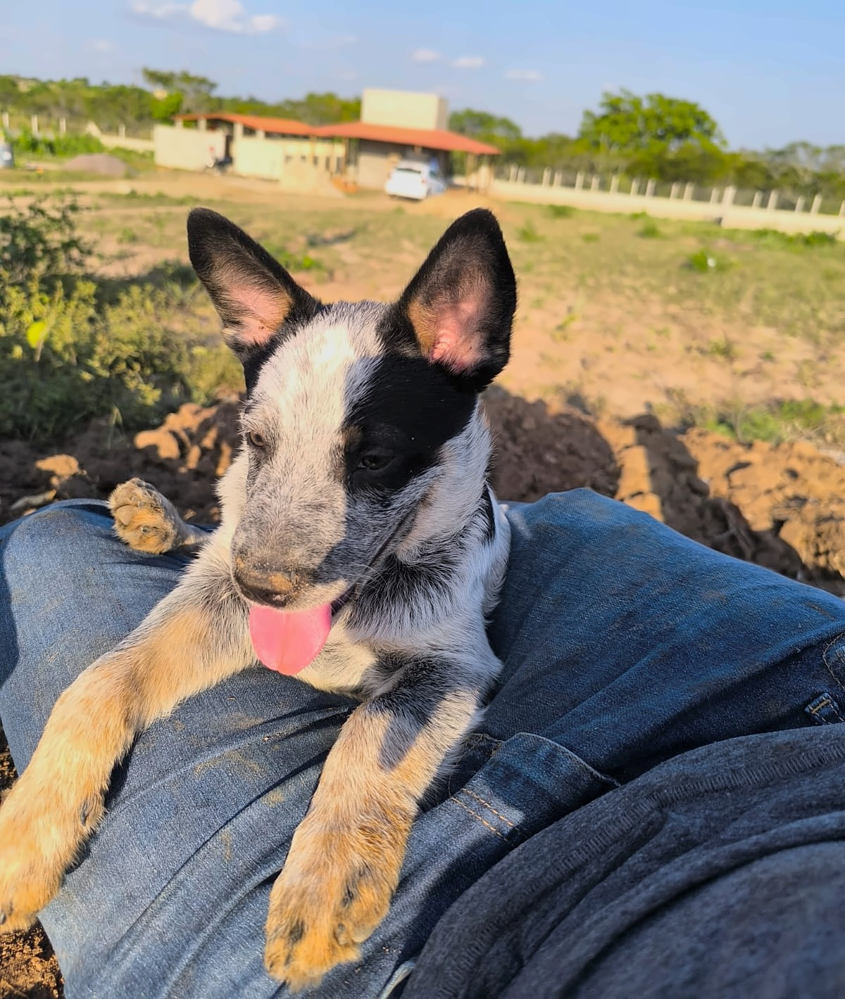
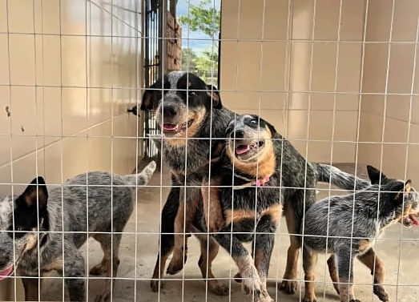
Hotel Canino
Sabemos que deixar seu cão aos cuidados de outra pessoa exige confiança. Por isso, no Hotel Canino Estrela Real, buscamos oferecer uma experiência acolhedora, segura e repleta de atenção.
Recebemos cães de diferentes raças, respeitando suas particularidades, necessidades e rotina.
Aqui, cada hóspede recebe cuidados individuais, momentos de lazer e acompanhamento durante toda a estadia.
Viaje tranquilo. Seu melhor amigo estará em boas mãos.
Consulte disponibilidade e valores pelo WhatsAppFilhotes
No Canil Estrela Real, cada ninhada é planejada com carinho e responsabilidade.
Acompanhamos de perto todo o desenvolvimento dos filhotes, desde os primeiros dias de vida até o momento em que estão preparados para conhecer suas novas famílias.
Nosso compromisso é oferecer filhotes bem cuidados, com acompanhamento, atenção às necessidades de cada fase e orientação aos futuros tutores.
Queremos que cada filhote encontre uma família preparada para oferecer tudo aquilo que essa raça precisa: carinho, dedicação, atividades e muito companheirismo.
Nossas ninhadas são planejadas e divulgadas conforme nosso programa de criação. Entre em contato para conhecer a disponibilidade atual ou manifestar seu interesse nas próximas ninhadas.
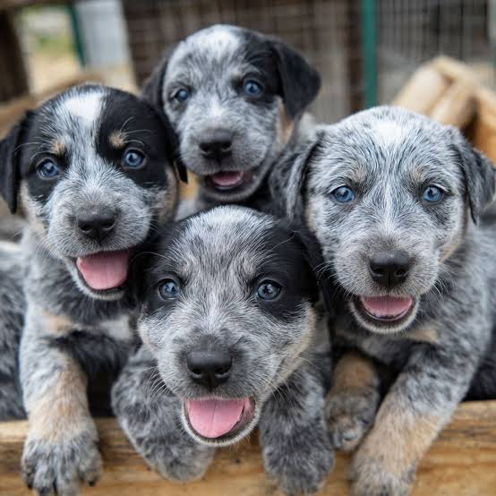
Talvez seu próximo melhor amigo esteja aqui.